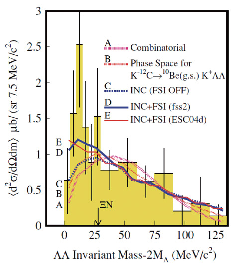

Physics Motivation
Normal hadrons are composed of either 3 quarks (baryons) or a quark-antiquark pair (mesons). But can a state with 6 quarks exist? In 1977, R. Jaffe predicted a highly symmetric, deeply bound 6-quark state called the 'H-dibaryon' (uuddss), based on the Pauli exclusion principle and color-magnetic interactions. In particular, the search for the H-dibaryon is extremely important for understanding the color-magnetic interaction between quarks, which plays a key role in hadronic mass splitting and short-range attractive forces. Recently, first-principle Lattice QCD calculations by the HAL QCD collaboration have provided a new perspective, suggesting that a resonance state may exist near the heavier ΞN (Xi-nucleon) threshold, rather than the originally assumed ΛΛ threshold. If discovered, the H-dibaryon would be a definitive proof of multiquark states, breaking the conventional boundaries of the quark model. This represents a profound test of Quantum Chromodynamics (QCD) and how the strong force binds fundamental particles into matter.

ΛΛ invariant mass spectrum from past experiment (KEK E522). The enhancement near the threshold suggests the existence of an H-dibaryon resonance or strongly attractive interaction.
The Experiment
We use the high-intensity K- beam at J-PARC to induce the (K-, K+) reaction on nuclear targets, producing double-Λ states and Ξ- hyperons. By utilizing the large-acceptance HypTPC spectrometer, we capture the 3D tracks of charged particles with high statistics and excellent energy resolution. The data acquisition for the E42 experiment was successfully completed in 2021. While the main analysis searching for the H-dibaryon is still ongoing, crucial results measuring the cross sections for Ξ- and ΛΛ production have already been published in PTEP (PTEP 2025, 091D01). These results set a strict upper bound on the decay width of the Ξ- particle in nuclear matter, marking a significant milestone in our ongoing research.